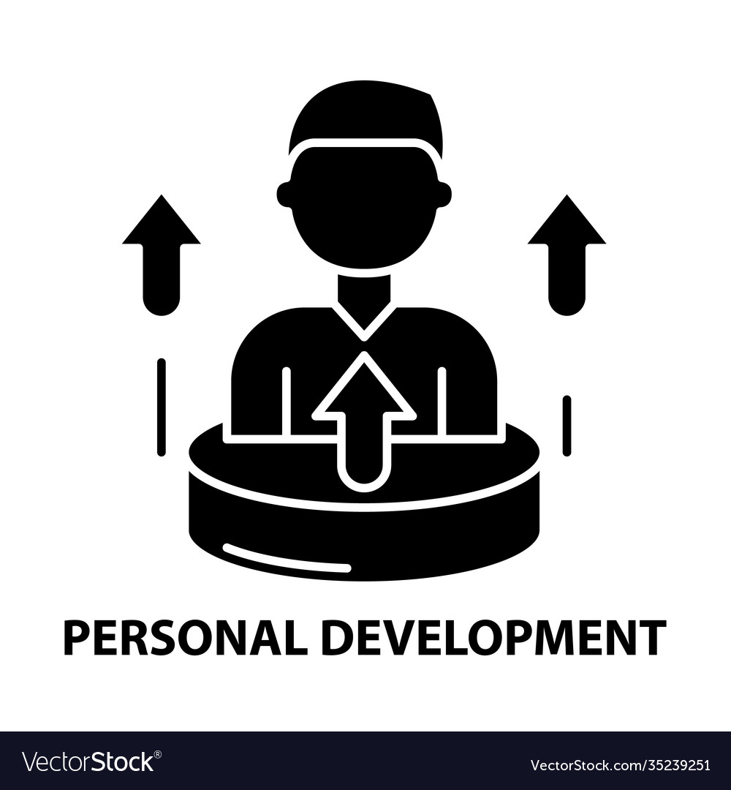
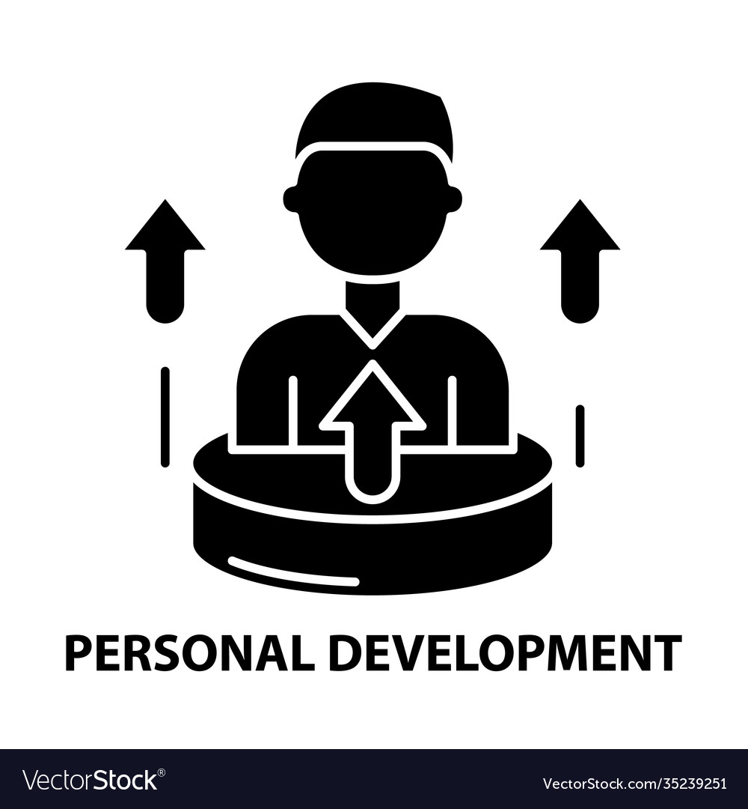

TRAITS
Devany is an exceptional individual who always gives his best in everything he attempts. He prides himself on being an attentive and jovial friend who is always looking out for the people around him, while improving himself to become the best version of himself.
|
< QUOTE
"The difference between the novice and the master is that the master has failed more times than the novice has tried"
|
PERSONALITY TEST
The results of this personality test gives an analysis of the answers Tashawn chose upon taking the test. While the results seem accurate based on the answers given, the person holding the tested personality thinks that the questions asked were not thorough enough nor allowed a more accurate answer to them, therefore limiting the accuracy of the data. In short, it cannot properly guage the personality in question. |

 



| ||